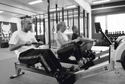
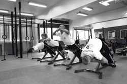
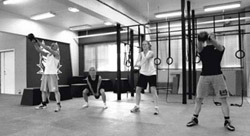
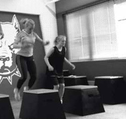

Om CrossFit
Det spesielle med CrossFit er
ikke å spesialisere seg mot
noen spesielle øvelser eller idretter. Treningene
er svært intensive, forholdsvis korte og
forskjellige hele tiden.
Det er sjelden man trener samme økt
om
igjen to ganger i løpet av en måned eller
to.
Målsetningen er å øke arbeidskapasiteten
og hurtigheten ved å provosere og overraske
sentralnervesystemet og den hormonelle
tilpasningen.
FUNKSJONELLE BEVEGELSER
Funksjonelle bevegelser har alltid eksistert.
De er en del av våres natur. I all den tid
mennesker har levd, har vi stått, sittet,
kastet, trukket, løftet, skubbet, klatret,
løpt, hoppet osv. Alle disse bevegelser er
funktionelle bevegelser. Funksjonelle bevegelser
innvolverer generelt mange ledd og muskelgrupper
og genererer kraft fra kjernen og ut til
armer og ben. Naturlige funksjonelle bevegelser
har stor innflytelse på øvelsene i CrossFit.
Det er mange fordeler ved å trene utelukkende
igennom funksjonelle bevegelser, men en av
de viktigste ting er at alle bevegelsene,
hvis korrekt utført, er sikre og skadesrisikoen
er minimal. Disse bevegelser er kommet i
bakgrunnen i den alment kjente fitness-verden,
som preges av maskiner som hindrer ens naturlige
bevegelsesmønster.
INTENSITET
CrossFit er blitt kjent for treningens høye
intensitet. Intensitet definerer vi som arbeid
på tid. Vi vil gjerne arbeide så mye som mulig
på så kort tid som mulig Når vi gjerne vil
oppnå en høy intensitet blir lengden av treningen
tilsvarende kort. Man kan simpelthen ikke trene
med høy intensitet i lengere tid. Derfor ligger
den intensive delen av treningen i CrossFit
på omkring 10-25 min. Den høye intensiteten
er direkte årsak til de gode resultater vi
oppnår gennom CrossFit-treningen. Det er allment
kjent, at trening med høy intensitet gir markant
større forbedringer i bla. VO2-max og fettforbrenning
enn trening med moderat intensitet. De funksjonelle
bevegelsene beskrevet ovenfor, hjelper oss
til at oppnå denne høye intensitet i det man
aktiverer flere muskelgrupper og ledd i samme
øvelse. Man vil aldri kunne oppnå samme høye
intensitet med isolerende bevegelser.
VARIERENDE
CrossFit varierer utrolig
mye både i varighet, bevegelser, gentagelser
og vekt. Den store variasjonen gjør, at man
får trent i gennom hele kroppen og at man oppnår
en god generell fitness (Se
mere her Hva er fitness). Den
store variasjonen i treningen gjør, at man
sjeldent får skader i CrossFit. Man trener
kroppen på mange forskjellige måter; langsomt-hurtig,
tungt-lett, mange gjentagelser-få gjentagelser
osv. Skader kommer ofte når treningen blir
ensidig - CrossFit er tvert om det motsatte.
Den store variasjonen i CrossFit er derfor
en stor motivasjonsfaktor, i det man alltid
blir utfordret på en ny og morsom måte.
Fra treningssenteret



CrossFit er enkelt men effektivt
- Funksjonelle bevegelser
- Intensitet
- Varierende
Treningssenter
DU FINNER OSS HER
Gamle Leirdalsvei 7, 1081 OSLO.